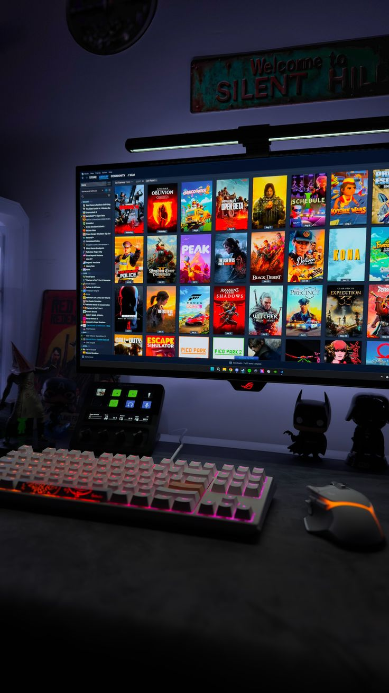

Hobbies


BS Information Technology student passionate about coding, technology, and building creative projects.
I live in Songco, Lantapan, Bukidnon and I am currently studying BS Information Technology at San Isidro College. I enjoy learning new technologies and improving my skills.
Technology plays a huge role in modern life. IT allows me to solve real-world problems and develop my critical thinking skills.
HTML 40%
CSS 35%
Python 30%
JavaScript 20%
